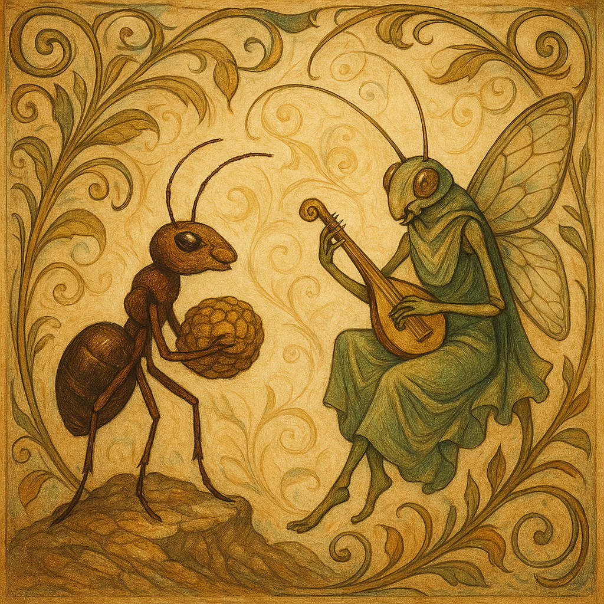

A Cigarra e a Formiga
por Esopo
Era uma vez uma formiga trabalhadora que passava os dias de verão juntando grãos e armazenando comida para o inverno. Enquanto isso, uma cigarra cantava alegremente sob o sol, zombando da formiga por trabalhar tanto.
— Por que você não aproveita o verão comigo? — dizia a cigarra.
— Estou me preparando para os tempos difíceis — respondeu a formiga. — Você também deveria.
Mas a cigarra ignorou o conselho e continuou cantando. Quando o inverno chegou, a cigarra não tinha comida e foi bater à porta da formiga, pedindo ajuda.
A formiga respondeu:
— Durante o verão, eu trabalhei enquanto você cantava. Agora dance para espantar o frio.
A leveza da arte é bela, mas o trabalho silencioso é o que sustenta os dias difíceis. A sabedoria vive no equilíbrio entre sonho e preparação.
Nesta fábula, somos convidados a ponderar o equilíbrio entre o prazer do instante e a prudência do futuro. A cigarra, símbolo da arte e do deleite, contrasta com a formiga, arquiteta do esforço e da disciplina. A verdadeira sabedoria reside em harmonizar esses polos: cultivar nossos sonhos e, ao mesmo tempo, preparar-nos para os desafios inevitáveis da vida. Assim, a existência ganha profundidade e significado, numa dança delicada entre o ser e o agir.
